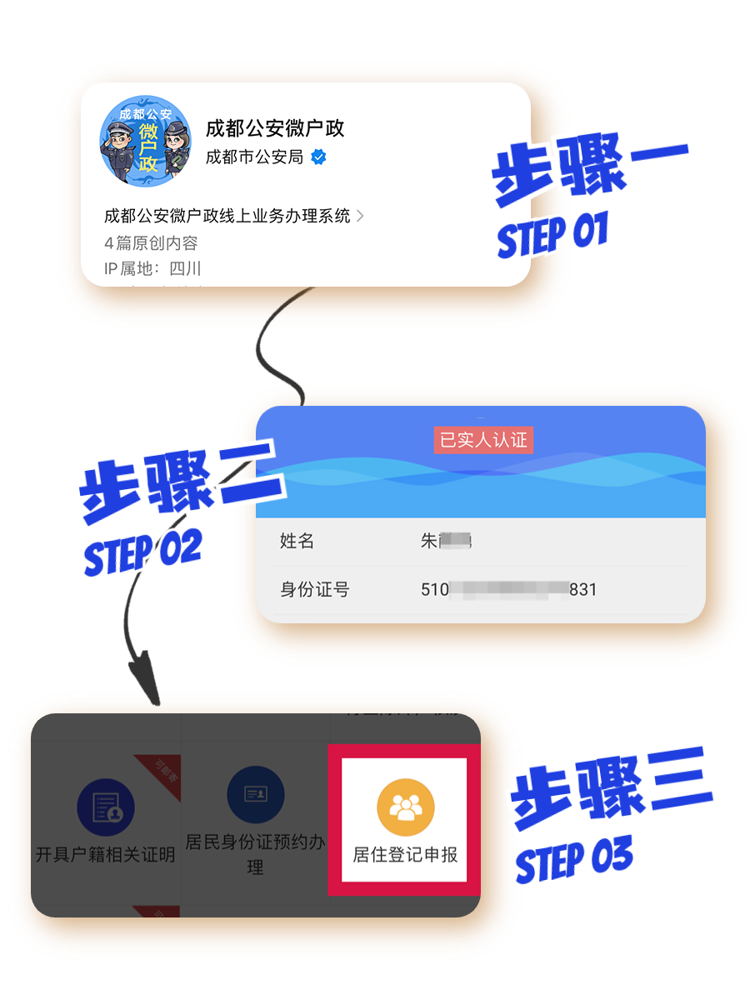

学院通知 · 教学通知
【温馨提示】申报居住登记信息那些事儿
发布时间：2023-06-11
一、居住信息登记申报方式（二选一） 1. 登陆“成都公安微户政”微信公众号，通过“居住登记申报”平台进行申报； 2. 到居住地公安派出所，或社区、居（村）委会人口信息采集点进行现场申报登记。 二、居住信息登记申报所需材料 u 居民身份证或其他有效身份证明（原件）； u 以下居住地住址证明之一： 1. 房屋所有权证明（未取得产权证的出具购房合同） 2. 房屋租赁登记备案凭证 3. 房屋租赁合同、单位出具的住宿证明 4. 学校出具的住宿证明（原件）。 三、网上自主申报流程 u 如果您此前使用过“成都公安微户政”并已完成实人认证，可直接进入“居住登记申报”开始填报。 u 如没有请按照下列步骤操作： 1. 关注“成都公安微户政”微信公众号，点击下方菜单“微户政”进入服务主页。 2. 点击“个人中心”，根据提示完成用户注册及实人认证。 3. 在服务主页点击“居住登记申报”，根据提示完成填报。 四、审核时间和有效起始时间 u 自主申报和现场申报两种方式的审核时间都是20个工作日； u 最终的有效起始时间以审核通过时间为准。 五、查询申报进度 u 自主申报信息确认提交后，审核结果会通过微信消息推送告知，并可在申报记录查看； u 现场申报的本人可以持居民身份证或其他有效身份证明前往居住地派出所窗口查询进展情况，也可以通过成都微户政的居住登记申报模块查询。 六、居住信息的注销 u 对已经通过审核录入公安网的居住信息，公安机关通过核查，对已离开的或虚假登记的居住登记信息进行注销。
